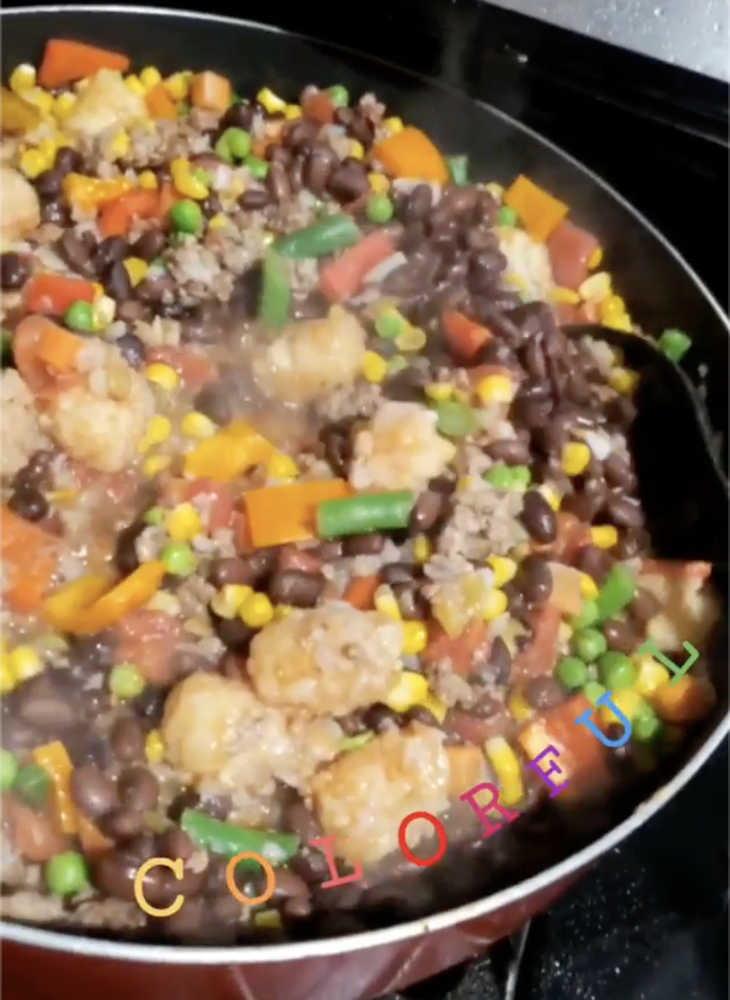

Picadillo
Behold!For those days when you don't really
know what to make but you have some ground beef. Maybe some potatoes too.
Possibly also some canned and frozen veg
Ingredients
- diced potatoes
- ground beef
- canned diced tomatoes
- canned olives
- canned green beans
- canned black or pinto beans
- frozen mixed vegetables
- enchilada sauce
- cilantro (optional)
Steps
- add ground beef to a large pan on high heat
- when beef is almost fully cooked add diced potatoes
- when potatoes are cooked add frozen and canned ingredients
- cook until frozen veg are hot
- top with cilantro